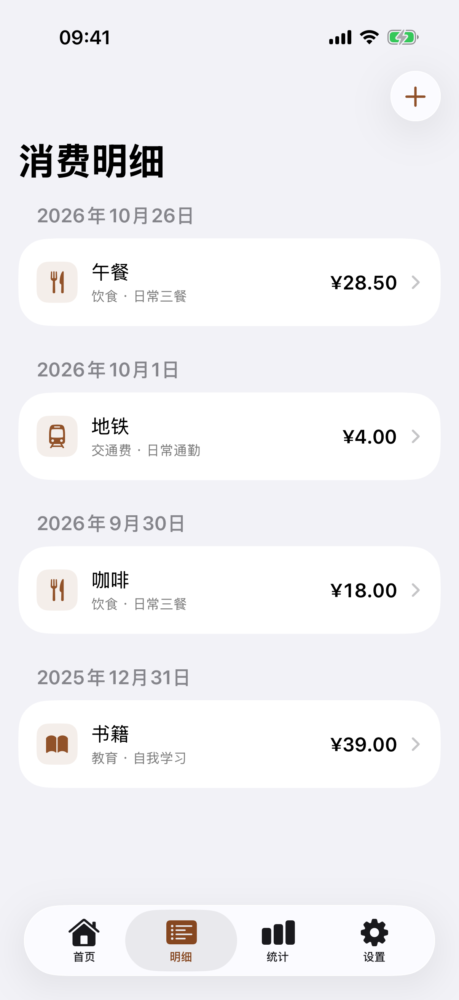
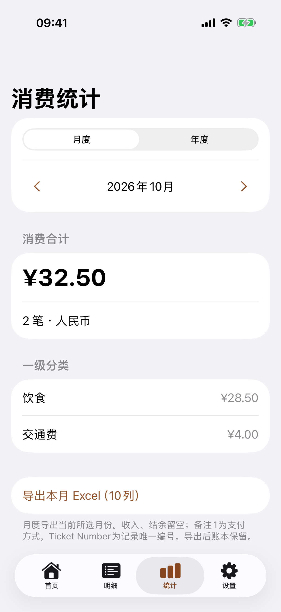
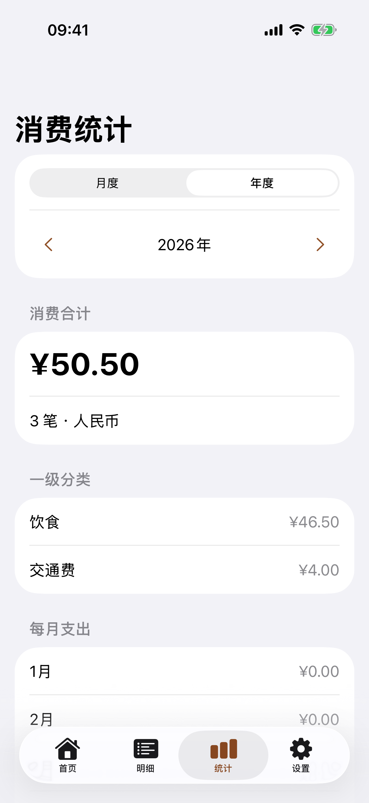
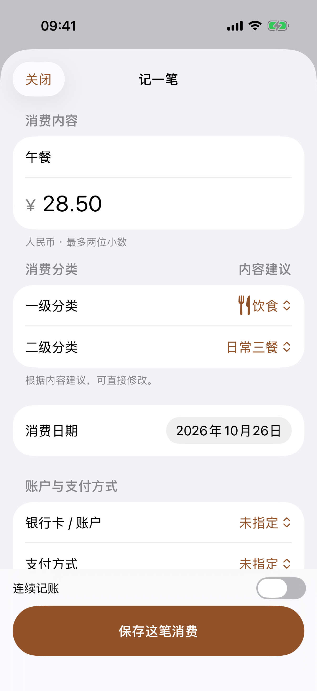

想起来，就记一笔。
填内容、金额和日期，选好分类即可保存。支持连续记账，让几笔消费一起整理。
A CLOSER LOOK
从记下这一笔，到回看这一年。
五张真实界面，看看花生的简单。




实际 App 界面，图中使用模拟记录，不代表真实消费。点按图片可查看完整原图。
LESS FRICTION. MORE CLARITY.
需要的功能，恰好在手边。
不连接银行，不打扰你的日常。
填内容、金额和日期，选好分类即可保存。支持连续记账，让几笔消费一起整理。
两级分类让明细更清楚。本地记住相同内容的分类选择，也可以手动调整。
在月度与年度之间切换，查看支出合计、分类和每月变化，让花费有个全貌。
创建完整 JSON 备份，由你选择保存位置。恢复前先校验和预览，再确认替换账本。
按月导出 Excel，将日常记录整理成表格。导出文件不设独立密码，请妥善保管。
无需注册或登录。没有开发者账本服务器，主动备份或导出时才保存到你选择的位置。
PERSONAL BY NATURE
A LITTLE PEANUT. EVERY DAY.
花生正在完成首版发行准备，尚未在 App Store 上架。
适用于 iPhone · 最低 iOS 17
上线后将在这里提供正式下载入口。